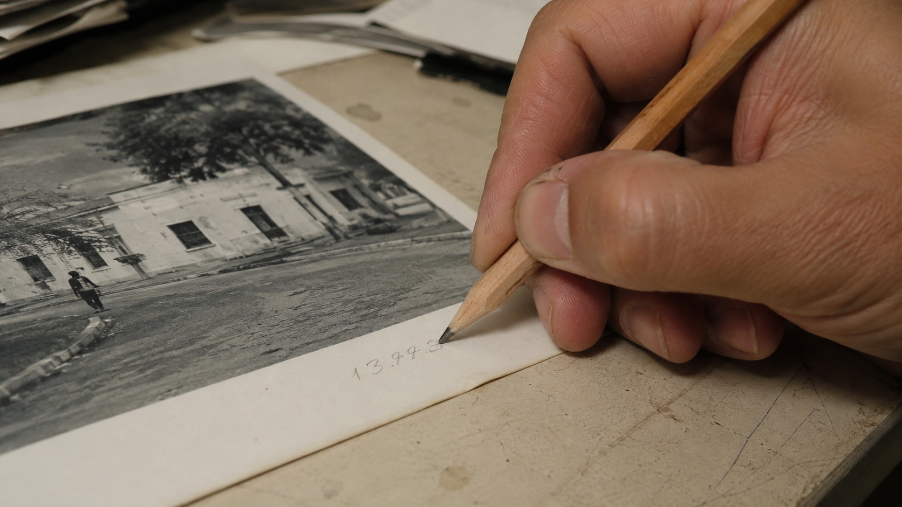

← BACK TO DOSSIERS LIST
REALISM CASE FILE // TREND: THE 5-MINUTE AUDIT TO MAKE ANY AI PROMPT 10X MORE REALISTIC
Camera-Grade Realism: Film-Style Calibration of a Hand Annotating a Printed Photograph
DATE: 2026-07-04
STATUS: CALIBRATED_REALISM
ENGINE: CHATGPT DALL-E 3

SPECIMEN IMAGE #16:9 - CLEAN OPTICS
Default AI image generation often turns ordinary scenes into repetitive visual clichés filled with flawless skin, immaculate surfaces, and cinematic lighting that rarely resemble how real photographs behave. A simple close-up of a hand annotating a printed photograph becomes far more convincing when the tiny physical imperfections of paper, graphite, skin, optics, and lighting are allowed to remain instead of being optimized away.
In the breakdown below we examine those physical characteristics layer by layer, from the subject and surrounding environment to physics, time, and camera behavior. However, the deeper calibration does not come only from adding descriptive detail. The real breakthrough comes from language-level substitutions that quietly replace synthetic vocabulary with physically grounded observational terminology, a process summarized by the lexicon shift calibration console at the end of the dossier.
Lexicon shifts function as film-style calibration rather than creative embellishment. Replacing phrases such as "cinematic lighting" with descriptions of scattered window illumination, or exchanging "perfect skin" for realistic pore visibility and pressure marks, changes how an image model distributes detail across the frame. Combined with realistic camera metadata, optical limitations, material aging, and documentary capture behavior, these linguistic adjustments significantly improve physical plausibility while avoiding repetitive AI aesthetics.
That brings us back to the original problem: realism is rarely created by adding more detail, but by choosing more truthful language. If you want a structured methodology for building prompts through layered film-style calibration and systematic lexicon shifts instead of generic stylistic keywords, explore ALPHA REALISM. The complete methodology, calibration framework, and advanced prompt engineering workflow are available inside the ALPHA REALISM Guide.
The 5 Layers of Reality Applied
Subject:
A close-up view of a human hand holding a sharpened wooden pencil while writing small handwritten annotations directly onto the white border of a printed photographic print. Fingertips show natural skin texture, subtle pore visibility, slight dryness around the knuckles, faint pressure marks where the pencil rests, short naturally worn fingernails, and realistic grip tension. The pencil tip leaves slightly uneven graphite density following natural hand pressure without stylized calligraphy. :contentReference[oaicite:0]{index=0}
Environment:
An ordinary work surface illuminated by indirect window light mixed with weak ambient indoor illumination. Soft shadows drift naturally across the paper edges with mild brightness falloff. The desk contains subtle signs of everyday use including tiny dust particles, faint scratches, slightly worn paper corners, and non-curated object placement rather than a staged workspace. :contentReference[oaicite:1]{index=1} :contentReference[oaicite:2]{index=2}
Physics:
Graphite friction produces slightly irregular stroke density. Gravity keeps the print flat while the paper edge curls very subtly from previous handling. Minor skin oils create delicate reflectance differences on the paper surface. Shadows remain physically consistent with a nearby window, while shallow depth introduces gentle optical softness instead of artificial blur.
Time:
The print exhibits faint handling wear, lightly softened corners, microscopic paper fibers, minimal dust accumulation, tiny graphite residue near previous notes, and slight surface aging consistent with repeated examination rather than archival preservation.
Camera:
Simulated documentary capture using a 50 mm equivalent lens on a consumer mirrorless or modern smartphone main camera. Moderate edge softness, realistic sensor grain, restrained sharpening, slight compression artifacts, natural highlight rolloff, mild tonal noise in darker regions, physically plausible autofocus behavior, and subtle lens imperfections without cinematic grading. :contentReference[oaicite:3]{index=3} :contentReference[oaicite:4]{index=4}
The Lexicon Shift Table
| Appearance (Dead Adjective) |
|
Living Event (Cause & Effect) |
| perfect skin |
➔ |
skin texture showing subtle pores, natural dryness around the knuckles, and uneven fingertip reflectance |
| cinematic lighting |
➔ |
mixed window light and ordinary ambient indoor illumination with naturally uneven shadow falloff |
| ultra sharp image |
➔ |
realistic focus priority with slight edge softness and gradual optical falloff |
| immaculate desk |
➔ |
working surface with light scratches, scattered dust, and ordinary signs of daily use |
| professional annotation |
➔ |
handwritten graphite notes with naturally inconsistent pressure and stroke density |
| flawless print |
➔ |
handled photographic print with softened edges, faint wear, and subtle paper fiber texture |
Calibration Prompt Console
Subject Layer: A close-up documentary photograph of a human hand writing handwritten annotations on the white border of a photographic print using a sharpened wooden pencil, realistic grip tension, natural skin pores, short fingernails, slight dryness around the knuckles, graphite pressure variation, authentic observational behavior. Environment Layer: Ordinary desk, indirect window light mixed with weak room illumination, lightly worn work surface, faint dust particles, subtle scratches, practical uncluttered workspace without stylization, naturally uneven shadows. Physics Layer: Visible graphite friction, realistic paper fiber response, slight page curl from handling, gravity-consistent placement, physically accurate reflections, natural micro-occlusion around the fingers. Time Layer: Lightly worn photo print, softened corners, tiny handling marks, faint graphite residue, minor aging of paper, authentic everyday usage. Camera Layer: 50 mm equivalent, documentary photography, consumer-grade optics, realistic autofocus, restrained sharpening, subtle sensor grain, mild compression artifacts, slight edge softness, physically plausible highlight clipping, neutral color response, no cinematic grading, no exaggerated depth of field, camera-grade realism --ar 16:9
Do you want to generate precise AI images?
Unlock our alpha realism blueprint, physical reliable framework to get the best of your creations with the ALPHA REALISM Guide.
Download Ebook Now